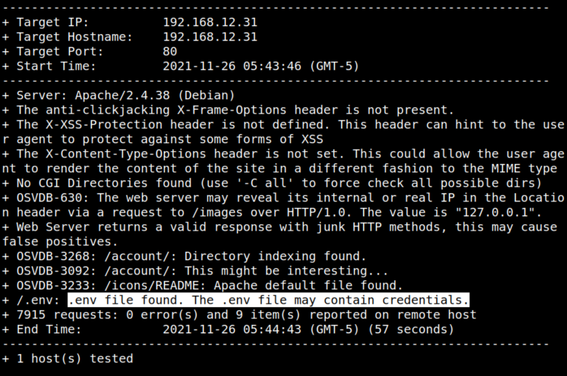
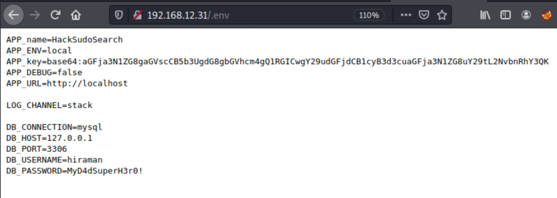

3.1 Scan the website with nikto
1. Run the following code.
$nikto
-h http
://
192.168.12.31
Output:

The “.env” file may contain credentials.
2. Navigate to
http://192.168.12.31/.env
.

You can see a password in it. “MyD4dSuperH3r0!”.
Index